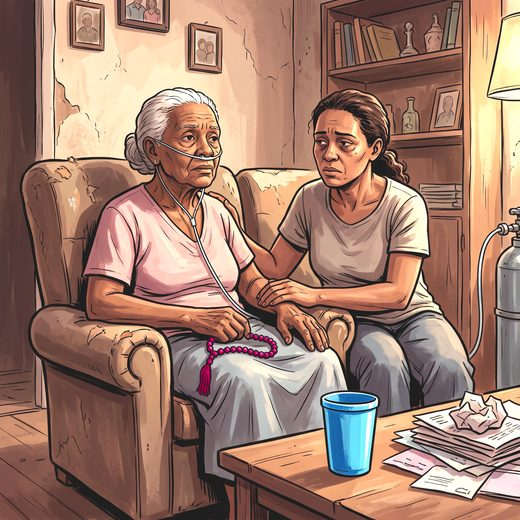

Consulta rápida à beira do leito
Condutas, doses e interações.
Referências da aula · 10
- Clark D. 'Total pain', disciplinary power and the body in the work of Cicely Saunders, 1958-1967. Soc Sci Med. 1999;49(6):727-36. PMID 10459885. doi:10.1016/s0277-9536(99)00098-2.PubMedDOI
- Radbruch L, De Lima L, Knaul F, et al. Redefining palliative care: a new consensus-based definition. J Pain Symptom Manage. 2020;60(4):754-64. PMID 32387576. doi:10.1016/j.jpainsymman.2020.04.027.PubMedDOI
- Bruera E, Kuehn N, Miller MJ, Selmser P, Macmillan K. The Edmonton Symptom Assessment System (ESAS): a simple method for the assessment of palliative care patients. J Palliat Care. 1991;7(2):6-9. PMID 1714502.PubMed
- Chochinov HM, Hack T, Hassard T, Kristjanson LJ, McClement S, Harlos M. Dignity therapy: a novel psychotherapeutic intervention for patients near the end of life. J Clin Oncol. 2005;23(24):5520-5. PMID 16110012. doi:10.1200/JCO.2005.08.391.PubMedDOI
- Chochinov HM, Hack T, McClement S, Kristjanson L, Harlos M. Dignity in the terminally ill: a developing empirical model. Soc Sci Med. 2002;54(3):433-43. PMID 11824919. doi:10.1016/s0277-9536(01)00084-3.PubMedDOI
- Anandarajah G, Hight E. Spirituality and medical practice: using the HOPE questions as a practical tool for spiritual assessment. Am Fam Physician. 2001;63(1):81-9. PMID 11195773.PubMed
- Puchalski C, Romer AL. Taking a spiritual history allows clinicians to understand patients more fully. J Palliat Med. 2000;3(1):129-37. PMID 15859737. doi:10.1089/jpm.2000.3.129.PubMedDOI
- Quill TE, Abernethy AP. Generalist plus specialist palliative care: creating a more sustainable model. N Engl J Med. 2013;368(13):1173-5. PMID 23465068. doi:10.1056/NEJMp1215620.PubMedDOI
- Zarit SH, Reever KE, Bach-Peterson J. Relatives of the impaired elderly: correlates of feelings of burden. Gerontologist. 1980;20(6):649-55. PMID 7203086. doi:10.1093/geront/20.6.649.PubMedDOI
- Academia Nacional de Cuidados Paliativos. Manual de Cuidados Paliativos. 2ª ed. Porto Alegre: Meridional; 2012.
Documentos oficiais
Leis e publicações do Ministério da Saúde sobre o cuidado da pessoa idosa, de acesso livre.
Abrir os documentos